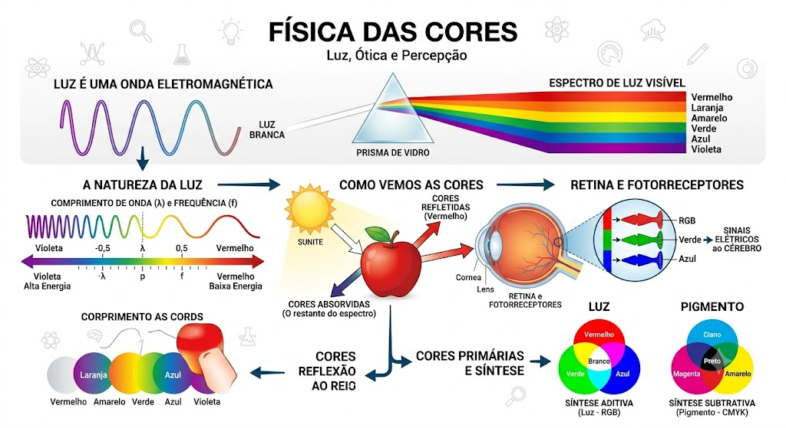

1. Uso e Informação de Imagens
Na física e na tecnologia, uma imagem é a representação visual de um objeto formada por um sistema ótico (como lentes ou espelhos). A forma como captamos e interpretamos essas imagens define a nossa compreensão do mundo digital e analógico.
- Imagens Reais: São formadas pela interseção real dos raios luminosos refletidos ou refratados. Elas podem ser projetadas em uma tela (como o cinema ou a imagem na retina).
- Imagens Virtuais: São formadas pelo prolongamento dos raios luminosos. Elas não podem ser projetadas e são vistas diretamente através do sistema ótico (como a sua imagem refletida no espelho do banheiro).
2. Física das Cores

Fenômenos Cromáticos Principais
| Fenômeno | Descrição | Exemplo Prático |
|---|---|---|
| Dispersão | Separação da luz branca em suas cores componentes ao atravessar um meio. | O arco-íris ou a luz passando por um prisma. |
| Absorção/Reflexão | Um objeto absorve certas cores e reflete outras. | Uma folha é verde porque absorve todas as cores e reflete apenas o verde. |
| Síntese Aditiva | Combinação de luzes coloridas para formar novas cores (Sistema RGB). | Telas de smartphones e monitores de computador. |
3. Espelhos e Reflexão
A reflexão ocorre quando a luz incide sobre uma superfície e retorna ao seu meio de origem. Ela segue leis rígidas onde o ângulo de incidência (i) é sempre igual ao ângulo de reflexão (r).
Tipos de Espelhos
- Espelhos Planos: Formam imagens virtuais, diretas (em pé) e do mesmo tamanho do objeto, porém invertidas lateralmente (enantiomorfas).
- Espelhos Côncavos: Curvados para dentro. Podem convergir a luz. Dependendo da distância do objeto, a imagem pode ser ampliada (como espelhos de maquiagem/barbeador) ou invertida e menor.
- Espelhos Convexos: Curvados para fora. Divergem a luz. Formam sempre imagens virtuais, diretas e menores, oferecendo um campo de visão muito mais amplo (como retrovisores de carros e espelhos de segurança em lojas).
4. A Ótica do Olho Humano
O olho humano funciona de forma extremamente parecida com uma câmera fotográfica digital, onde as lentes focam a luz em um sensor sensível.
- Córnea e Cristalino: Funcionam como um sistema de lentes convergentes. O cristalino altera sua forma (acomodação visual) para focar objetos que estão perto ou longe.
-
Retina: É a tela do olho. Fica no fundo do globo ocular e contém células fotossensíveis:
- Cones: Responsáveis por enxergar as cores (vermelho, verde e azul).
- Bastonetes: Responsáveis por perceber o brilho e permitir a visão em locais de baixa luminosidade (visão noturna, em preto e branco).
Curiosidade da Física: A imagem projetada na nossa retina é real e invertida (de cabeça para baixo). É o nosso cérebro, através do nervo ótico, que processa a informação e desinverte a imagem para que vejamos o mundo na posição correta.